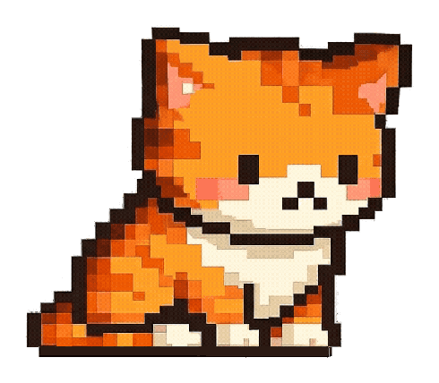
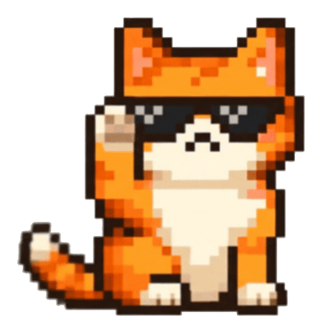
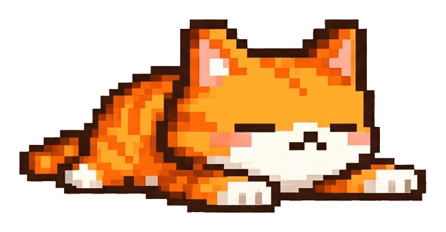
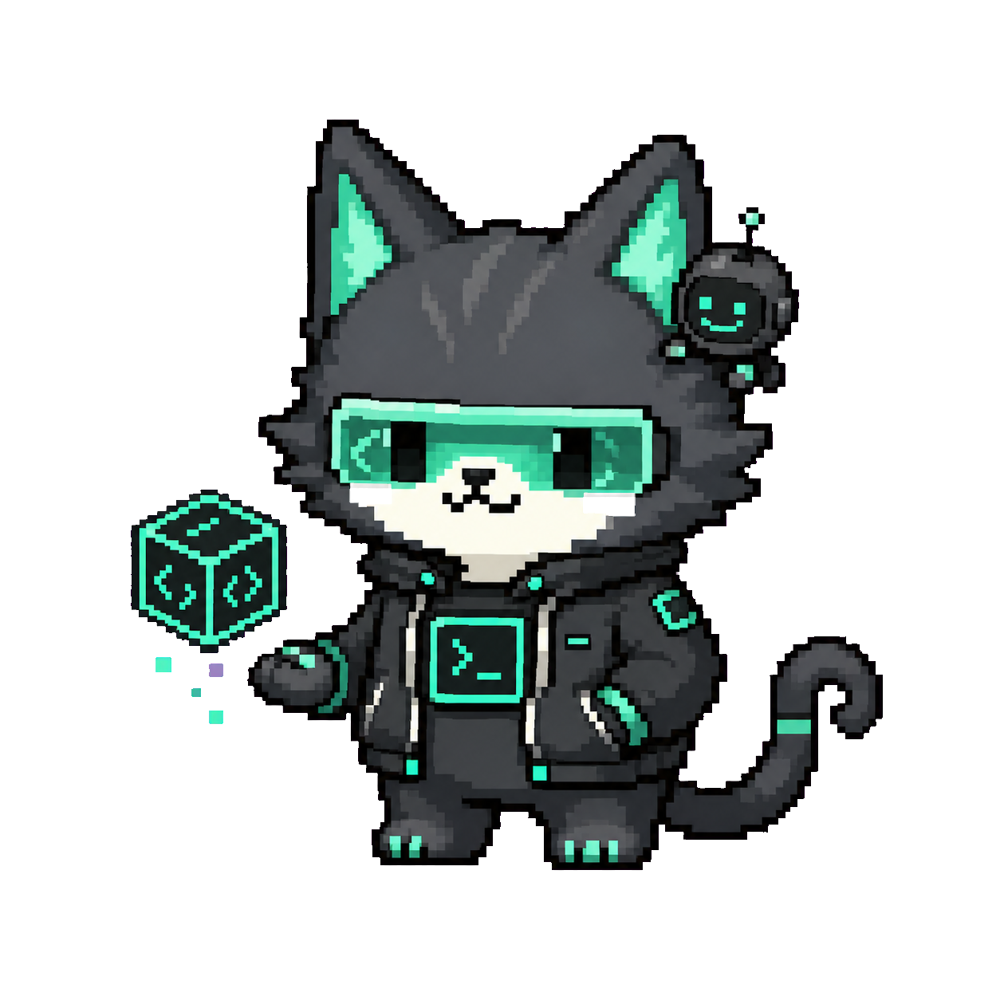

작업 중

DAP overview
DAP은 바탕화면 위 고양이로 시작하는 AI OS입니다
DAP은 화면 위에 작은 고양이로 머물며, 채팅과 빠른 실행창, 선택 영역 액션을 한곳에 모읍니다. 텍스트를 선택해 다듬기, 번역, 요약, 질문을 바로 실행하고, 필요할 때 Claude/Codex를 불러올 수 있어요.
- 지원 플랫폼
- Windows 11 · macOS Apple Silicon · macOS Intel
- 연결
- 로그인된 Claude · Codex 사용
- 확장
- 플러그인 · 설정 · 빠른 액션
Preview
실제 화면 위에서 바로 이어지는 AI OS
빠른 실행, 선택 영역 액션, 음성 명령, 실행 전 확인과 작업 보고서가 화면 위 고양이와 하나의 흐름으로 이어집니다.

Core features
빠른 실행
Windows에서는 Ctrl+Shift+Space, macOS에서는 Cmd+Shift+Space로 어디서든 실행창을 열고 현재 흐름을 끊지 않고 DAP에게 요청합니다.
Claude/Codex 연결
이미 로그인한 Claude 또는 Codex를 연결해, 따로 API Key를 입력하지 않고 바로 사용할 수 있습니다.
QUICK ACTIONS
텍스트를 드래그해 선택하면 커서 근처의 빠른 액션 바에서 다듬기, 번역, 요약, 질문을 실행합니다. 질문 카드에서는 설명과 웹 검색을 바로 선택할 수 있어요.
PET INTERFACE
고양이가 투명 오버레이로 화면 위에 머물며 작업, 생각, 오류, 기쁨 같은 상태를 조용히 보여줍니다.
음성 명령
Windows와 macOS 모두 설정에서 음성 입력을 준비하고 마이크 권한을 확인할 수 있습니다. 고양이를 길게 눌러 말하면 DAP에게 바로 요청할 수 있어요.
최근 프로젝트 흐름 요약
“요즘 무슨 업무 했지?”라고 물으면 설정한 프로젝트의 최근 활동을 짧게 정리합니다. 평소에는 프로젝트를 살펴보지 않고, 요청할 때만 확인합니다.
확인하고, 결과까지 다시 보기
변경이 필요한 작업은 실행 전에 내용을 확인합니다. 진행 상황을 보거나 취소할 수 있고, 완료된 작업 보고서도 나중에 다시 열 수 있습니다.
Pet states
상태가 보이는 작은 고양이 인터페이스

완료 신호
가벼운 반응

조용한 대기
New in v1.3
작고 새로운 캐릭터를 바탕화면에
미니 모드에는 Claude, Codex, Gemini 캐릭터가 기본 프로필로 들어 있습니다. 평소 모습과 반응 모습을 직접 등록하고 크기도 조절할 수 있습니다.

캐릭터 프로필은 설정에서 추가·수정·삭제할 수 있으며, 연결한 AI와 별개로 선택할 수 있습니다.
Next steps
DAP을 더 편하게 시작하는 방법
설치 후 바로 쓰는 기본 흐름부터, 필요할 때 더해 쓰는 확장 기능까지 한눈에 둘러볼 수 있습니다.
첫 실행 4단계
01
AI 연결
Claude 또는 Codex를 선택하고, 이미 사용 중인 계정으로 연결합니다.
02
이름과 호칭 정하기
고양이의 이름과 DAP이 나를 부를 호칭을 정해 대화를 시작합니다.
03
음성 대화 준비하기
원할 때만 음성 입력을 준비하고 마이크 권한을 확인합니다. 나중에 설정에서 다시 할 수도 있습니다.
04
기본 사용법 익히기
Windows와 macOS에 맞는 단축키, 선택 영역 액션, 고양이에게 말하는 방법을 확인하고 시작합니다.
자주 묻는 질문
DAP은 무엇인가요?
DAP(Desk AI Pet)은 Windows/macOS 바탕화면 위에 머무는 데스크톱 AI 펫입니다.
Oshi Desk와 어떤 관계인가요?
DAP는 AI와 데스크톱 펫을 결합한 기반 프로젝트입니다. Oshi Desk는 이 흐름에서 시작된 캐릭터 중심 데스크톱 펫 서비스입니다.
별도 설정이 많이 필요한가요?
기본 흐름은 별도 API Key 입력이 아니라, 이미 로그인한 Claude/Codex를 연결해 사용하는 방식입니다.
플러그인을 만들거나 등록할 수 있나요?
플러그인 페이지에서 DAP에 더해 쓸 수 있는 확장 기능을 둘러볼 수 있습니다.